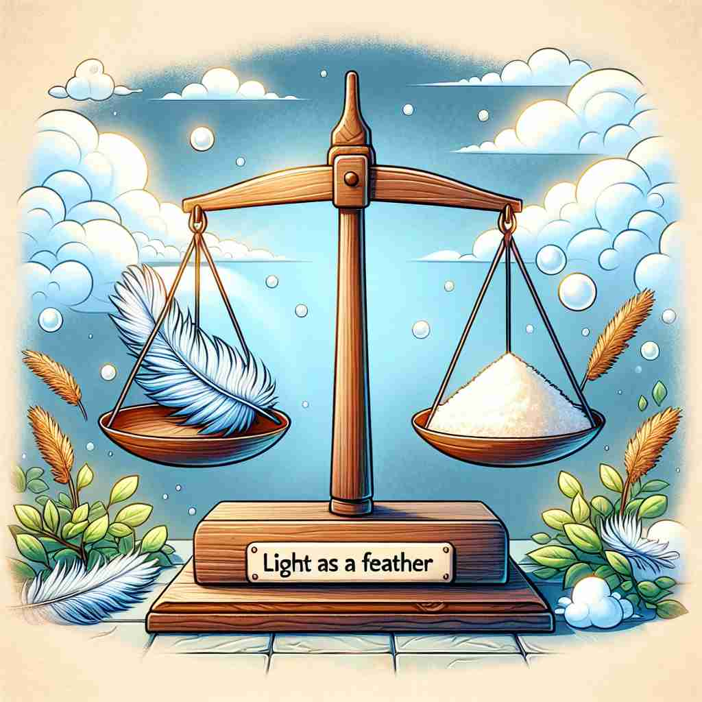

💬 The bird sings as an angel would.

💬 The sky changes colors beautifully as the sun sets.
💬 As a teacher, he helps students learn new things.

💬 The feather is as light as a feather compared to the sugar.
🔈 [æz][əz]
🗝️ adv./conj. in the way or manner that
🖼️ 在一个音乐课堂上，老师展示如何弹钢琴。她对学生们说：'请按照美国作曲家肖邦在乐谱中标记的方式（as he wrote it），用一种轻柔的手法来演奏这段旋律。'
🔍 记忆'as'的关键在于理解其核心含义'以某种方式'。无论是比较、时间、原因，还是角色功能，都可以联想到'以某种方式'这一核心概念。这种联系有助于更好地理解和记忆'as'的多重用法。
💬 The bird sings as an angel would.
💬 The sky changes colors beautifully as the sun sets.
💬 As a teacher, he helps students learn new things.
💬 The feather is as light as a feather compared to the sugar.
🌳 ‘as’ 是一个非常古老的词，其主要功能是连接词，表达方式或程度的比较，通常没有明确的词根或词缀结构。
💡 记住 'as' 的时候，可以联想到 ‘as...as...’ 结构，如 'as tall as'（和一样高），表示比较。在语境中记忆这种用法，有助于理解其功能。
🗝️ adv. to the same degree
🖼️ 在一个篮球比赛中，两位球员正在进行投篮对决。解说员兴奋地说：'两位选手在今天的比赛中表现得 equally skilled，as talented as each other，真是一场势均力敌的较量。'
💬 The concert was as good as I expected.
❓ 延伸自"以相同方式"的概念
🗝️ conj. at the same time that; while
🖼️ 在一个热闹的厨房里，妈妈在烘烤蛋糕的同时，孩子们正在画画。妈妈温柔地说：'as I bake, 你们继续完成你们的艺术创作。'
💬 As I was leaving, the phone rang.
❓ 从"方式"延伸到"时间"的概念
🗝️ conj. because
🖼️ 在一个悠闲的咖啡馆中，两位朋友在聊天。一个朋友叹息道：'as 我今天感到有点累，我们可以改天再去远足吗？'
💬 As it was raining, we stayed indoors.
❓ 从"方式"引申为"原因"
🗝️ prep. in the role or function of
🖼️ 在一个电影片场，导演对演员们说：'今天的拍摄中，你需要以医生的角色身份（as a doctor）来指导病人的治疗。'
💬 She works as a teacher.
❓ 以某种"方式"担任角色
🗝️ conj. for example
🖼️ 在一个生物课堂上，老师在讲解生态系统。他说道：'许多动物在它们的栖息地中扮演重要角色，比如蜜蜂作为授粉者（as pollinators）。'
💬 Some birds, as the owl, are nocturnal.
❓ 以某种"方式"举例说明